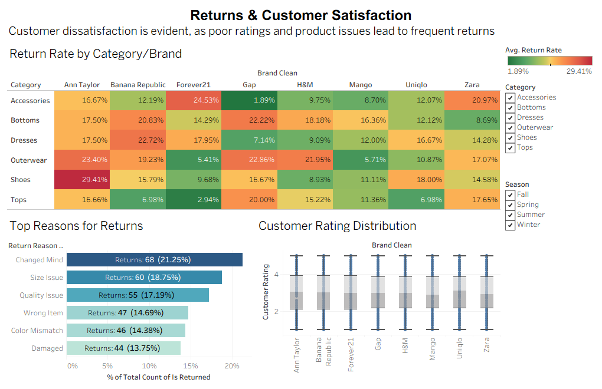

Processed 2,176 boutique records using SQL, R, and Tableau to uncover why customers returned products. Logistic regression revealed price mismatch as the strongest predictor of returns, while Tableau dashboards showed certain categories like apparel faced higher return risks with negative margins. These insights highlighted opportunities to reduce return-related costs by ~15% and improve inventory optimization.
- R
- SQL
- Tableau
- Excel
- K-Means
- PCA
- Model Evaluation